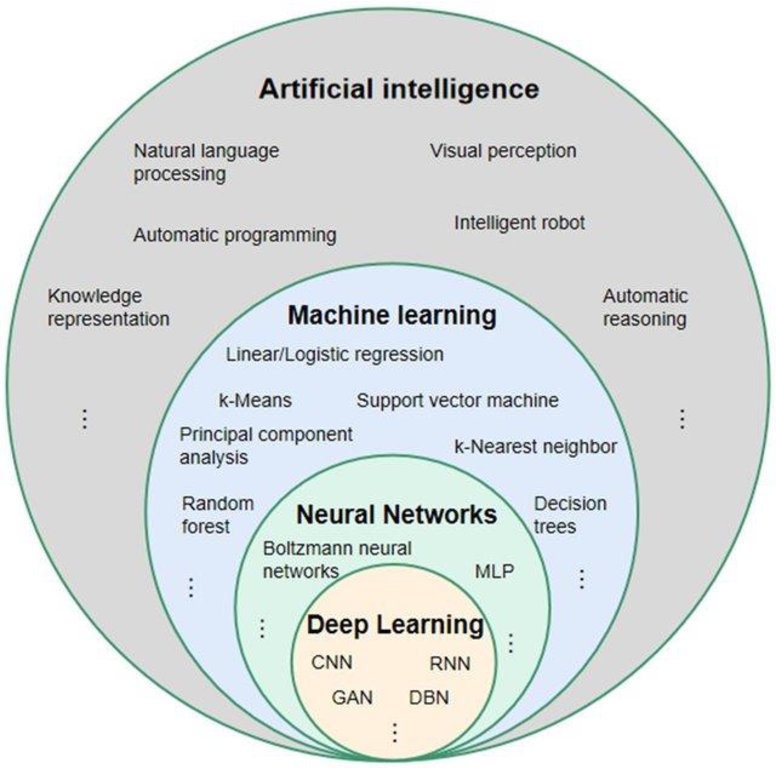
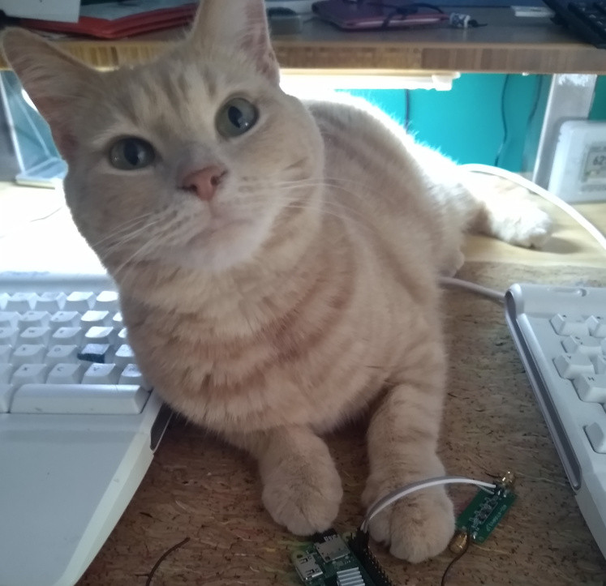
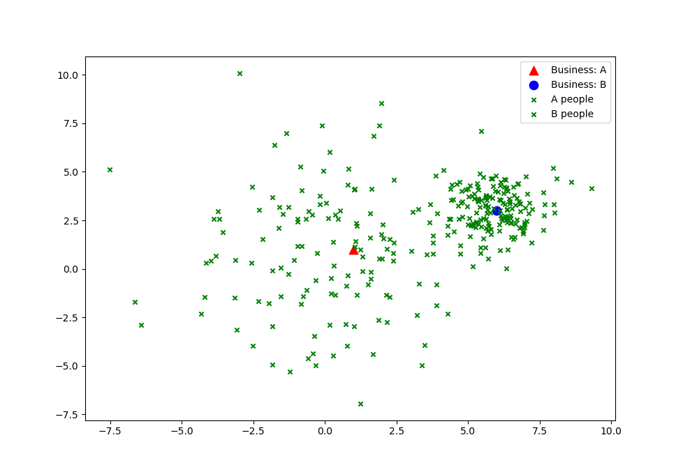
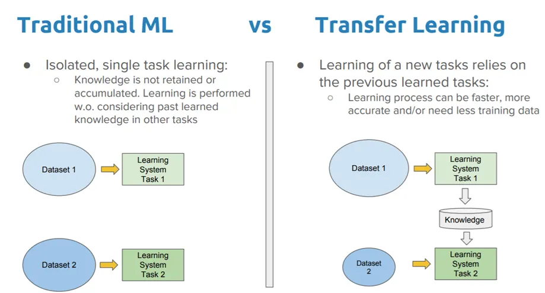
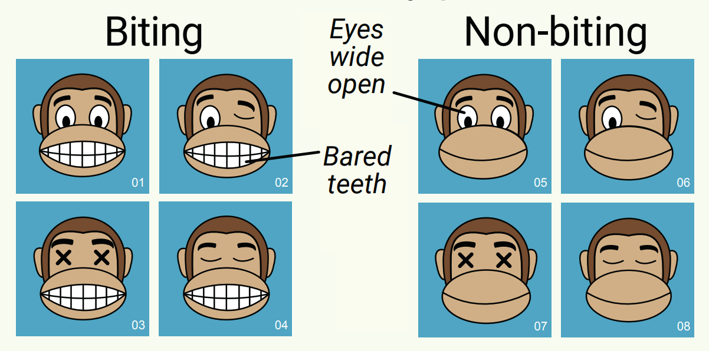
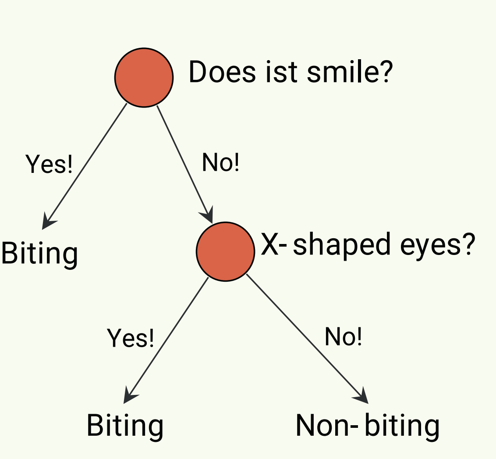
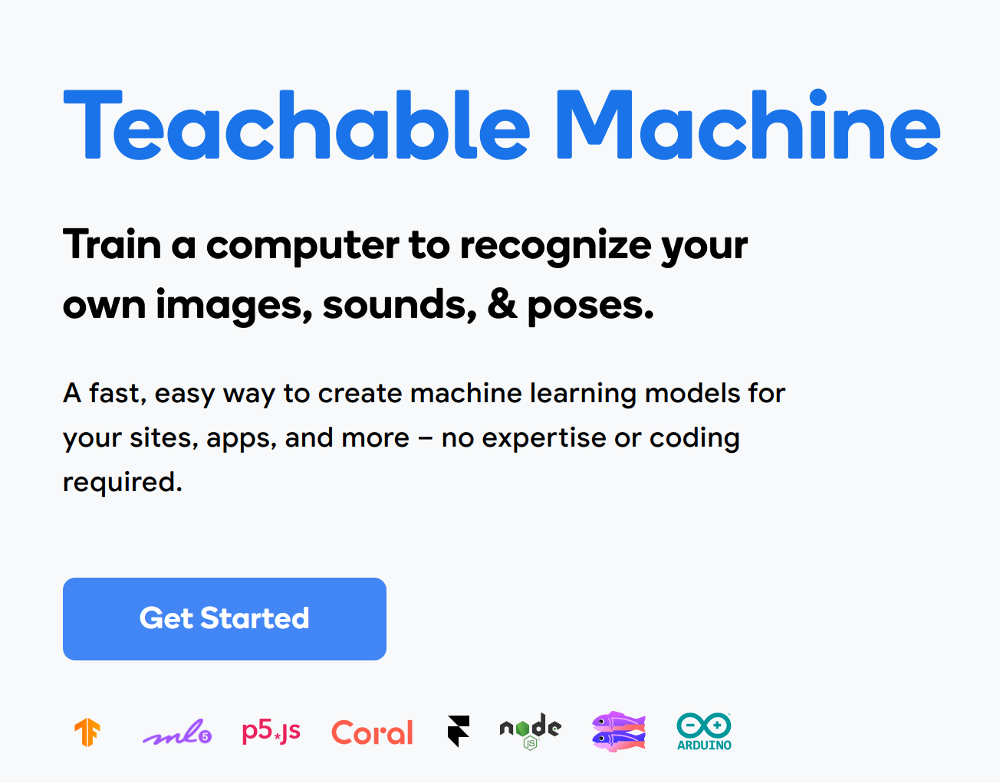

Exploring AI and ML
Learn, Build, Deploy
2023-12-31
If you want to learn more about Machine Learning and AI in Dayton, please attend a GemCity Machine Learning meetup.
GemCity ML/AI
We meet every third Thursday at 6pm as part of GemCity Tech meetup group.
GemCity TECH’s mission is to grow the local industry and the community by providing a centralized destination for technical training, workshops and providing a forum for collaborating.
Currently, support several special interest groups from a variety of technical disciplines.


Outline
This presentation will cover the following topics:
- Introduction to AI and machine learning (ML)
- Supervised and unsupervised learning
- Transfer Learning
- Classification and classes
- Dataset creation: We will be building a ML model using Teachable Machines
Build a Machine Learning model
The learning outcomes are as follows:
- Understand the difference between AI and machine learning.
- Explain supervised and unsupervised learning.
- Classifier and classes
- Importance of clean datasets and how bad data affects ML performance
- Your own ML algorithm that you trained without any coding.
Artificial Intelligence (AI)
AI is more than Large Language Models (LLM)
LLM: Large Language Models: aka Chat GPT, Claude AI, Bard, Gemini
- Type of AI program that can recognize and generate text.
- LLMs are trained on huge sets of data — hence LARGE, Costly to build
- LLMs are built on machine learning: specifically, a type of neural network called a transformer model.
Transformers:
- Uses Attention models: (greatly improves speed)
- Transformers learn the context and track relationships between sequence components
GPT: Generative Pre-trained Transformers
- GPT is neural network-based language prediction models built on the Transformer architecture.
- GPT models analyzes natural language queries (prompts), and predict the best response based on their understanding of language.
- GPT models rely on the knowledge gained after training with hundreds of billions of parameters on massive language datasets.
What is AI and ML?
Artificial Intelligence (AI)
- A field in computer science
- AI is something that has the ability “learn” to do something without instructions.
Machine Learning (ML)
- Machine learning is a field of study in artificial intelligence
- ML uses statistical algorithms that can learn from data and generalize to unseen data (Testing/User data)
- Perform tasks without explicit instructions.

How do ML algorithms learn
ML Algorithms learn via supervised or unsupervised learning.
Supervised Learning
Supervised learning is when you have labels for each data point.
Unsupervised Learning
Unsupervised learning is when it “learns” something about the data, but do not have the data truth.
Example of Data for Supervised Learning
| Data | Truth (Label) | Data | Truth (Label) |
|---|---|---|---|
|  | cat | dog |
x 100’s more Labeled images
Example of data for unsupervised learning
| Data | Data |
|---|---|
x 500’s more images
Goal of unsupervised learning
Find features that separate the data into groups / clusters. Then hope there is a small number of labeled features so that we can classify those groups.
Why Do Unsupervised
Labeled data is really expensive. Sometimes “truth” can not be obtained.
Example: atmospheric distortion correction
Gedunken Experiment
Say there is a town with two employers (A and B).
Predict if person works for company A or B, based on where they live.
First stab: See if people are clustered around their work place.
So if we had a clustering algorithm we can predict where a person might work.

K-Means
K-means is the most common clustering algorithm.
K-means clusters, n data points (e.g. All your data) into k clusters by placing each data point to the nearest k.
Example: point p is 5 ft from \(k_i\) and 10 feet from \(k_j\). K-means would then place point p into the \(k_i\) group. Once, all the points are placed into a cluster or group, the new means for each cluster (\(k_i\) and \(k_j\)) are updated. The location for each mean cluster k is calculated by finding the mean from all the points that belong to that cluster.
Transfer Learning
Transfer Learning can allow you to use what is learned from a large dataset to your smaller (refined) data similar to the larger model.
Sarkar (2018)
- Example: ImageNet Dataset has 1.4 million images and 1000 classes.
To learn more go to TensorFlow Transfer Learning Tutorial
Classes, Classification and Models
We are going to build a model that classifies between two (or more) classes.
Classes
The label or category:
- Cat, Dog
Classification
A category into which something is put.
Model
Tries to predict the correct label (class) of a given input data.
The model is trained using the training data, and then it is evaluated on test data.
Classification
Say you are tasked to group monkeys into two classes:
- Class_1: Biting Monkey
- Class_2: Non-Biting Monkeys
Developing a Model
- Create a rule to define: Biting and NonBiting
- Separate your monkeys by that rule
- Repeat until all of your monkeys can follow your rule.
Image from Huffington Post.
| Class_1: Biting | Class_2: Non Biting |
|---|---|
| card c | card d |
| card a | card b |
| … | … |
Classification Model: Evaluation
What Rule did you use to determine which class the Monkey belongs to?
Does your model hold up?

- Class_1= Biting Monkey
- Class_2= Non-Biting Monkeys

Classification: Man vs Machine
In this monkey example, we (human) could infer the model (set of rules). Software Engineering is when a human makes a rule that the machine follows.
Most Machine learning classifiers, the “rules” of the model are unknown to us. We only get the output of the machine assigned classes.
Machine learning is when the machine creates the rules for the machine to follow.
Building a ML Model
There are four basic steps to building a model
- Train the model
- Export the model
- Use the model
- Forth Step: Repeat
Why a forth step
Your model, app etc will not work the first time.
Training a model to classify sounds
We are going to train a ML model to classify sounds.
WITHOUT any coding.
- Google “Teachable Machine”
- Click Get Started
- Click Audio Project (standard model)
- Create three classes:
- Background
- Clapping
- Snapping

Building ML with Teachable Machines
Thank you
If you want to take this to the classroom.
I have a No Code ML Tutorial for Elementary School Children
- Train a model to classify hand gestures
- Learn what a classifier is
- Use conditional statements to turn those classes into an emoji
- Build a Web application
References
Gem City Tech ML/AI